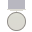
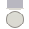
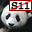

Below you can find a list of the 10 known Perl 6 modules. All of them have been working on Rakudo at some point.
These modules can be installed with panda, a module management tool which comes with Rakudo Star.
If you want to contribute your own module, please read this guide.
Missing a module you can't live without? Consider adding it to the Most Wanted Modules file in the Most Wanted repository.
Project list
| Module Name | Description | Badges | Travis | Updated | |
|---|---|---|---|---|---|
| Math::OddFunctions | Standard math function odds and ends |

 


|
Add Travis | 2015-04-02T00:45:56Z | |
| mandelbrot | Simple Mandelbrot Set scripts |
|
Add Travis | 2015-04-02T00:46:21Z | |
| Acme::Meow | The kitty you always wanted, now in Perl 6 |
|
Add Travis | 2015-08-28T10:51:08Z | |
| Math::Vector | Vector math class |
|
Add Travis | 2015-09-02T14:27:24Z | |
| Math::Polynomial | Simple polynomial class |
|
Add Travis | 2015-09-02T17:48:30Z | |
| Testing | Damian Conway's Perl 6 testing module |
|
Add Travis | 2015-09-12T17:09:11Z | |
| Math::ContinuedFractions | Basic continued fraction arithmetic |
|
Add Travis | 2015-09-12T18:28:52Z | |
| IO::Prompter | Damian Conway's IO::Prompter |
|
Add Travis | 2015-09-24T06:58:26Z | |
| Math::ChebyshevPolynomial | Simple Chebyshev polynomial class |
|
Add Travis | 2015-09-25T11:46:51Z | |
 |
JSON::Tiny | A minimal JSON (de)serializer |
|

|
2015-10-10T19:37:09Z |
Legend:
has a README |
has tests |
recently updated |
 conforms to Perl 6 modules specs
This page is generated from the files in the modules.perl6.org
repository.
Last update: 2015-10-10 21:43:27 GMT
For feedback and patches, please contact us through the #perl6 IRC channel, or send an email to the perl6-compiler@perl.org mailing list.
Want to know how to score badges? Read up on how to achieve fame and profit!
Badge images from Heydings Icons and openclipart.